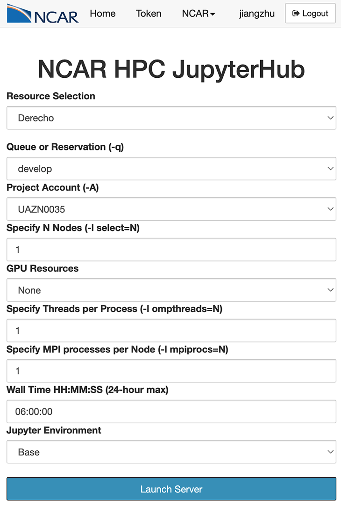

2. Running CESM in Four Steps - Exercises#
Tutorial at the 2024 paleoCAMP | June 18–July 1, 2024
Jiang Zhu
jiangzhu@ucar.edu
Climate & Global Dynamics Laboratory
NSF National Center for Atmospheric Research
Learning Objectives:
Run simple CESM simulations
Gain hands-on skills on customizing the run length and namelists
Know the importance of validating your numerical experiments
Understand the idea of more complex simulation by examining steps to set up an LGM simulation
Time to learn: 60 minutes
How to get started?
Option 1: Launch a terminal from the JupyterHub and chose Derecho during login
Start the JupyterHub with the Derecho node

Launch a terminal within the JupyterHub

Option 2 (most commonly used): use terminal from your system directly
ssh -XY YOUR_SUERNAME@derecho.hpc.ucar.edu

REMINDER: CESM directories
Source code directory (“Headquarter”):
/glade/work/jiangzhu/paleocamp/cesm2.1.5/Case directory (“Production Control Room”):
~/cases/YOUR_CASENAMEor/glade/u/home/YOUR_USERNAME/cases/YOUR_CASENAMERun directory (“Factory”):
/glade/derecho/scratch/YOUR_USERNAME/YOUR_CASENAME/runArchive directory (“Storage”):
/glade/derecho/scratch/YOUR_USERNAME/archive/YOUR_CASENAME/
2.1. Task 1: run a fully coupled preindustrial simulation for one year#
2.1.1. Hints:#
What are the four steps?
What is the compset for fully coupled preindustrial?
Use resolution of
f19_g17for fast throughputWhich XML variable should you change to tell the model to run for one year?
XML change should be done before
case.submitFollowing the CESM naming conventions, consider using
b.e21.B1850.f19_g17.piControl.001as the case nameIt may take ~16 minutes to finish the one-year simulation.
Click here for the solution
1. create a new case: go into scripts directory in the CESM Code and run the create_newcase command
cd /glade/work/jiangzhu/paleocamp/cesm2.1.5/cime/scripts
./create_newcase --case ~/cases/b.e21.B1850.f19_g17.piControl.001 --compset B1850 --res f19_g17 --project UAZN0035
2. case setup: go into the Case Directory and run case.setup
cd ~/cases/b.e21.B1850.f19_g17.piControl.001
./case.setup
3. case build: stay in the Case Directory and run case.build (change the run length using xmlchange before or after)
./xmlchange STOP_OPTION=nyears,STOP_N=1
./case.build
4. Build and submit
./case.submit
2.1.2. Further information#
Building the executable may take more than 10 minutes.
While you wait, open a second terminal and practice your Unix commands (such as
cd,ls, andgrep) by visiting your directories of “Production Control Room”, “Factory”, and “Headquarter”, and see what are there.After submitting the job, use
qstat -u YOUR_USERNAMEto check the status of your job.Once the model is running, select one of your favorite components and read the log file (in the Run Directory, “Factory”) and see what the model is doing.
2.2. Task 2: run a fully coupled mid-Holocene simulation with the orbital forcing for one year#
2.2.1. Hints:#
Different from the preindustrial control, we don’t have a compset available for the mid-Holocene. You need to add namelist changes to user_nl_cpl to set up orbital configurations.
According to Table 1 of Otto-Bliesner et al., (2017), Eccentricity = 0.018682, Obliquity (degrees) = 24.105, Perihelion = 0.87 (for simplicity, we don’t consider the other forcings here, i.e., CO2)
Check out the meaning of
orb_modehere and decide which mode you should useUse your favorite text editor to change
user_nl_cpl: such as vi, emacs, nano, etc. (double click to open, edit, and save works on JupyterHub)These namelist changes can be done after
case.buildbut beforecase.submitFollowing the CESM naming conventions, consider using
b.e21.B1850.f19_g17.midHolocene.001as the case name
Click here for the solution
1. create a new case: go into scripts directory in the CESM Code and run the create_newcase command
cd /glade/work/jiangzhu/paleocamp/cesm2.1.5/cime/scripts
./create_newcase --case ~/cases/b.e21.B1850.f19_g17.midHolocene.001 --compset B1850 --res f19_g17 --project UAZN0035
2. case setup: go into the Case Directory and run case.setup
cd ~/cases/b.e21.B1850.f19_g17.midHolocene.001
./case.setup
3. case build: stay in the Case Directory and run case.build
OPTION I: Add the following to user_nl_cpl
orb_mode = "fixed_parameters"
orb_eccen = 0.018682
orb_obliq = 24.105
orb_mvelp = 0.87
Change run length and build the case
./xmlchange STOP_OPTION=nyears,STOP_N=1
./case.build
4. Build and submit
./case.submit
2.3. Task 3: how to validate your simulation setup#
2.3.1. Hints:#
Going through the log files (in the RUN directory, aka “Factory”) is one way to see how the model is being run.
Examining
*_infiles (e.g.,drv_inin the CasesDocs directory within the Case Directory) is another way to check the setup.
Click here for the solution
If you want to check the log file,
cpl.log.xxx, in the Run Directory (when model is still running) or in your Storage Directory (when the simulation and archiving have finished).
vi /glade/derecho/scratch/jiangzhu/archive/b.e21.B1850.f19_g17.midHolocene.001/logs/cpl.log.3950708.desched1.240330-011322.gz
type /orb_params to search, you should see the following
(shr_orb_params) Calculate characteristics of the orbit:
(shr_orb_params) Calculate orbit for year: -4050
(shr_orb_params) ------ Computed Orbital Parameters ------
(shr_orb_params) Eccentricity = 1.868182E-02
(shr_orb_params) Obliquity (deg) = 2.410538E+01
(shr_orb_params) Obliquity (rad) = 4.207183E-01
(shr_orb_params) Long of perh(deg) = 8.696128E-01
(shr_orb_params) Long of perh(rad) = 3.156770E+00
(shr_orb_params) Long at v.e.(rad) = -5.751115E-04
Try also grep shr_orb_params YOUR_cpl.log
If you want to check the
drv_infile
vi /glade/u/home/jiangzhu/cases/b.e21.B1850.f19_g17.midHolocene.001/CaseDocs/drv_in
type /orb_ to search, you should see the following
orb_eccen = 0.018682
orb_mode = "fixed_parameters"
orb_mvelp = 0.87
orb_obliq = 24.105
Try also grep orb_ CaseDocs/drv_in
2.4. Summary#
Set up and run a CESM simulation in four steps
Customize the simulation with
xmlchangeand namelist changeSee below for how to set up a much more complicated paleo simulation (but still with the same four steps)
2.5. Advanced module: recreate Jiang’s CESM2-PaleoCalibr LGM simulation#
The goal is to show you how a complicated paleo simulation is done.
Be aware that many efforts went to develop the LGM boundary conditions(not shown here), which may take months.
Still four steps(!), but with more XML and namelist changes to apply the paleoclimate boundary conditions.
2.5.1. Create new case#
A long-format compset was used to have more precise control of how I want to run each component
cd /glade/u/home/cmip6/cesm_tags/release-cesm2.1.1/cime/scripts
./create_newcase --case ~/cesm/cases/b.e21.B1850.f19_g17.PaleoCalibr.21ka.02 --res f19_g17 --compset 1850_CAM60_CLM50%SP_CICE_POP2_RTM_SGLC_SWAV --run-unsupported
2.5.2. case setup#
I have FORTRAN code changes that need to be put into SourceMods/src.xxx/
I specify how many CPUs to use for each component for a better computation performance
Lots of
xmlchangeto take care of the different land sea distribution due to the lowered sea level at the LGM
cd ~/cesm/cases/b.e21.B1850.f19_g17.PaleoCalibr.21ka.02
cp /glade/work/jiangzhu/data/inputdata/cesm2_21ka/gx1v7_overflow SourceMods/src.pop/
cp /glade/work/jiangzhu/data/inputdata/cesm2_21ka/gx1v7_region_ids SourceMods/src.pop/
cp /glade/u/home/jiangzhu/cesm/backup/nimax_limiterA/micro_mg2_0.F90 SourceMods/src.cam/micro_mg2_0.F90
./xmlchange NTASKS_ATM=900,NTHRDS_ATM=2,ROOTPE_ATM=0
./xmlchange NTASKS_CPL=900,NTHRDS_CPL=1,ROOTPE_CPL=0
./xmlchange NTASKS_LND=360,NTHRDS_LND=2,ROOTPE_LND=0
./xmlchange NTASKS_ROF=360,NTHRDS_ROF=2,ROOTPE_ROF=0
./xmlchange NTASKS_ICE=540,NTHRDS_ICE=2,ROOTPE_ICE=360
./xmlchange NTASKS_OCN=180,NTHRDS_OCN=2,ROOTPE_OCN=900
./xmlchange NTASKS_WAV=1,NTHRDS_WAV=1,ROOTPE_WAV=0
./xmlchange NTASKS_GLC=1,NTHRDS_GLC=1,ROOTPE_GLC=0
./xmlchange RUN_TYPE=startup
./xmlchange GET_REFCASE=FALSE
./xmlchange ATM_DOMAIN_PATH=/glade/work/jiangzhu/data/inputdata/cesm2_21ka
./xmlchange LND_DOMAIN_PATH=/glade/work/jiangzhu/data/inputdata/cesm2_21ka
./xmlchange OCN_DOMAIN_PATH=/glade/work/jiangzhu/data/inputdata/cesm2_21ka
./xmlchange ICE_DOMAIN_PATH=/glade/work/jiangzhu/data/inputdata/cesm2_21ka
./xmlchange ATM_DOMAIN_FILE=domain.lnd.fv19_gx1v7_21ka.200623.nc
./xmlchange LND_DOMAIN_FILE=domain.lnd.fv19_gx1v7_21ka.200623.nc
./xmlchange OCN_DOMAIN_FILE=domain.ocn.fv19_gx1v7_21ka.200623.nc
./xmlchange ICE_DOMAIN_FILE=domain.ocn.fv19_gx1v7_21ka.200623.nc
./xmlchange ATM2OCN_FMAPNAME=$inputdata_dir/map_fv19_TO_gx1v7_21ka_aave.200623.nc
./xmlchange ATM2OCN_SMAPNAME=$inputdata_dir/map_fv19_TO_gx1v7_21ka_blin.200623.nc
./xmlchange ATM2OCN_VMAPNAME=$inputdata_dir/map_fv19_TO_gx1v7_21ka_patc.200623.nc
./xmlchange OCN2ATM_FMAPNAME=$inputdata_dir/map_gx1v7_21ka_TO_fv19_aave.200623.nc
./xmlchange OCN2ATM_SMAPNAME=$inputdata_dir/map_gx1v7_21ka_TO_fv19_aave.200623.nc
./xmlchange ROF2OCN_FMAPNAME=$inputdata_dir/map_r05_nomask_TO_gx1v7_21ka_aave.200623.nc
./xmlchange ROF2OCN_LIQ_RMAPNAME=$inputdata_dir/map_r05_TO_gx1v7_21ka_merged_200623.nc
./xmlchange ROF2OCN_ICE_RMAPNAME=$inputdata_dir/map_r05_TO_gx1v7_21ka_nnsm_200623.nc
./case.setup
2.5.3. case build#
I usually set up namelist changes before running
case.builduser_nl_cpl: orbital change
orb_iyear = -19050
orb_mode = 'fixed_year'
user_nl_cam: GHG, topography with added ice sheets, and model cloud parameter tuning
bnd_topo = '/glade/work/jiangzhu/data/inputdata/bnd_topo_fv_1.9x2.5_LGM_c200629_nc3000_Nsw084_Nrs016_Co120_Fi001.replaced.nc'
scenario_ghg= 'FIXED'
co2vmr = 190e-6
ch4vmr = 375e-9
n2ovmr = 200e-9
f11vmr = 0.0
f12vmr = 0.0
micro_mg_num_steps = 8
dust_emis_fact = 0.55D0
clubb_gamma_coef = 0.275D0
user_nl_pop changes: ocean bathymetry, land-sea mask, and initial condition
topography_file = '/glade/work/jiangzhu/data/inputdata/cesm2_21ka/topography_21ka_200623.ieeei4'
region_mask_file = '/glade/work/jiangzhu/data/inputdata/cesm2_21ka/region_mask_21ka_200623.ieeei4'
ebm_param_option = 'internal'
init_ts_file = '/glade/work/jiangzhu/data/inputdata/cesm2_21ka/b.e12.B1850C5.f19_g16.i21ka.03.pop.h.0801-0900.climo.ncra.nc'
init_ts_file_fmt = 'nc'
init_ts_option = 'file'
init_iage_init_file = '/glade/work/jiangzhu/data/inputdata/cesm2_21ka/b.e12.B1850C5.f19_g16.i21ka.03.pop.h.0801-0900.climo.ncra.nc'
init_iage_init_file_fmt = 'nc'
init_iage_option = 'file'
overflows_restfile = '$casename.pop.ro'
user_nl_clm: land surface data change to reflect the LGM ice sheets, and remove anthropogenic processes
fsurdat = '/glade/work/jiangzhu/data/inputdata/surfdata_fv19_hist_16pfts_nourb_CMIP6_21ka.c200624.nc'
finidat = '/glade/work/jiangzhu/data/restart/i.e21.I1850C5.f19_g17.21ka.01/i.e21.I1850C5.f19_g17.21ka.01.clm2.r.1401-01-01-00000.nc'
urban_hac='OFF'
calc_human_stress_indices='NONE'
do_harvest=.false.
stream_year_first_urbantv=1850
stream_year_last_urbantv=1850
irrigate=.false.
popdensmapalgo = 'nn'
user_nl_rtm: initial condition for river is being set here
finidat_rtm = '/glade/work/jiangzhu/data/restart/b.e12.B1850C5.f19_g16.i21ka.03/0901-01-01/b.e12.B1850C5.f19_g16.i21ka.03.rtm.r.0901-01-01-00000.nc'
rtm_effvel = 'NULL'
user_nl_cice: bathymetry for the sea ice model, as well as the initial condition
kmt_file = '/glade/work/jiangzhu/data/inputdata/topography_21ka_200623.ieeei4'
ice_ic = 'default'
./case.build
2.5.4. submit job#
The model runs 46 years per wallclock day, so STOP_N=20 works well (20 years can be finished within the limit of JOB_WALLCLOCK_TIME of 12 hours)
./xmlchange STOP_OPTION=nyears,REST_OPTION=nyears
./xmlchange STOP_N=20,REST_N=10
./xmlchange RESUBMIT=4
./xmlchange JOB_WALLCLOCK_TIME=12:00:00
./case.submit